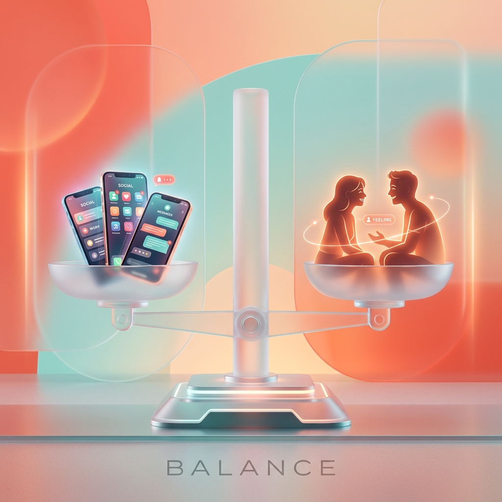

Apresentação Acadêmica
Aproximando pessoas ou criando distâncias?
Uma reflexão aprofundada sobre comunicação humana, relacionamentos interpessoais, desafios educacionais e cidadania digital na era hiperconectada.
Equipe do Projeto
Conheça os autores e organizadores desta reflexão acadêmica.
Docente e Orientador do Projeto de Pesquisa sobre Cidadania e Tecnologia Digital
Introdução & Dilema
A revolução tecnológica transformou radicalmente a maneira como produzimos conhecimento, nos relacionamos, estudamos e percebemos o mundo ao nosso redor.
Ao mesmo tempo em que encurta distâncias geográficas de forma sem precedentes, o uso desregrado ou superficial dos dispositivos digitais pode erguer barreiras invisíveis no convívio presencial e afetar a qualidade de nossas interações mais profundas.
Praticidade Cotidiana
A digitalização democratizou o acesso à informação e otimizou tarefas essenciais do cotidiano.
Desafios Comportamentais
A hiperconectividade ininterrupta impõe custos invisíveis à saúde mental, ao desenvolvimento interpessoal e à concentração.
A tecnologia encurta milhas e recria laços que a distância física ameaçaria enfraquecer.
Comunicação Humana
A comunicação não-verbal constitui a maior parte da empatia humana — e é justamente ela que é filtrada no meio digital.
Consciência Social
Humilhações, agressões psicológicas e perseguições no ambiente digital trazem consequências devastadoras para o mundo real.
Diferente do conflito físico, o ataque digital ganha escala instantânea, permanece registrado por tempo indeterminado e atinge a vítima em seu ambiente mais sagrado: seu lar.
Como o uso dos smartphones altera a dinâmica das refeições, conversas e relacionamentos familiares.
Mediação Parental & Jovem
Promover a autonomia consciente dos jovens exige regras claras, diálogo transparente e hábitos equilibrados.
Ambiente Escolar
Laptops, plataformas educacionais e pesquisas online expandem o aprendizado — mas ter acesso rápido à informação não equivale a dominá-la.
O letramento digital envolve desenvolver o discernimento crítico para questionar a origem e a veracidade de tudo o que lemos.
Inovação e Futuro
A IA pode atuar como um tutor personalizado eficiente — explicando conceitos complexos, sugerindo bibliografias e estruturando roteiros de estudo.
Contudo, a verdadeira aprendizagem reside no processo ativo de reflexão humana, e não no ato passivo de delegar a escrita ou o raciocínio a um algoritmo.
Desafios Acadêmicos
A facilidade de copiar conteúdos traz armadilhas silenciosas ao desenvolvimento intelectual dos estudantes.
Copiar frases ou respostas prontas sem citar autores ou sem compreender o conteúdo anula a construção do pensamento autônomo e prejudica a capacidade de síntese.
Notificações de jogos e redes sociais durante as explicações geram a ilusão de 'multitarefa', mas reduzem drasticamente a absorção de conceitos importantes.
Segurança & Privacidade
Proteger sua identidade e seus dados pessoais é um dever essencial no mundo moderno.
Pegada Digital
O que é publicado na internet ganha permanência e alcance que muitas vezes fogem do nosso controle.
Respeite o direito de imagem e a privacidade do próximo. Antes de postar uma foto de um colega, pergunte-se se aquela publicação pode constrangê-lo no futuro.
Desinformação se alastra através do compartilhamento por impulso. Não espalhe conteúdos sem verificar a veracidade em portais de checagem confiáveis.
Engenharia Social
Golpistas usam urgência fabricada, promessas de prêmios fáceis e clonagem de perfis para manipular sentimentos e induzir ao erro.
Síntese e Conclusão
A tecnologia não é vilã nem salvadora; ela é um espelho e uma ferramenta das nossas escolhas.
O caminho maduro não é a rejeição da tecnologia, mas sim a prática constante da consciência digital: cultivar o equilíbrio, o respeito interpessoal e o uso com propósito.

“A tecnologia conecta dispositivos com incrível perfeição. Cabe a nós garantir que ela continue conectando corações e mentes com verdadeira humanidade.”
Obrigado pela atenção! | Projeto Orientado pelo Prof. Sávio Mendes